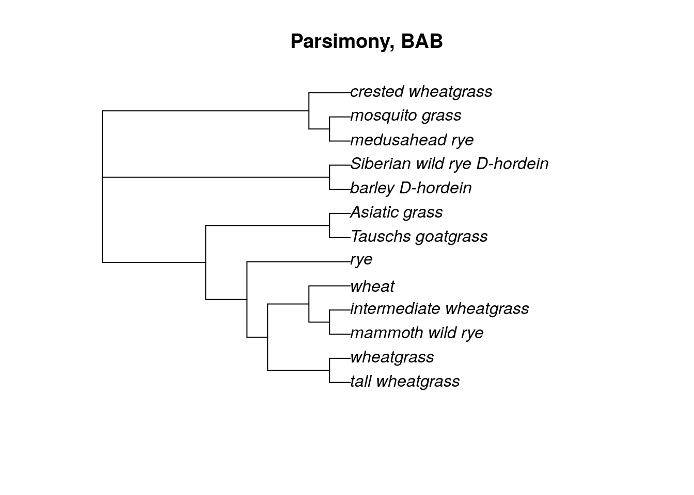
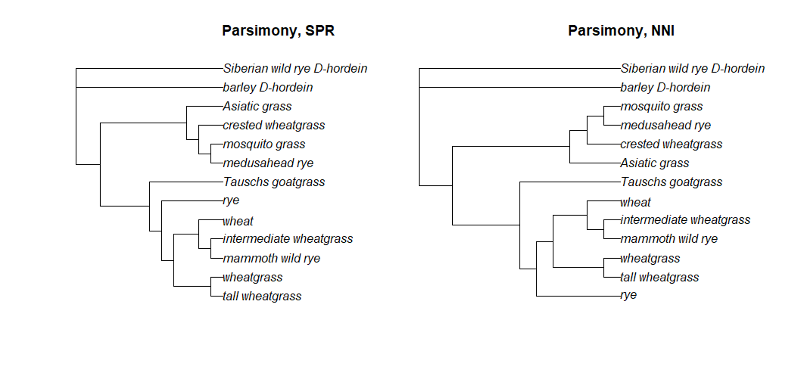
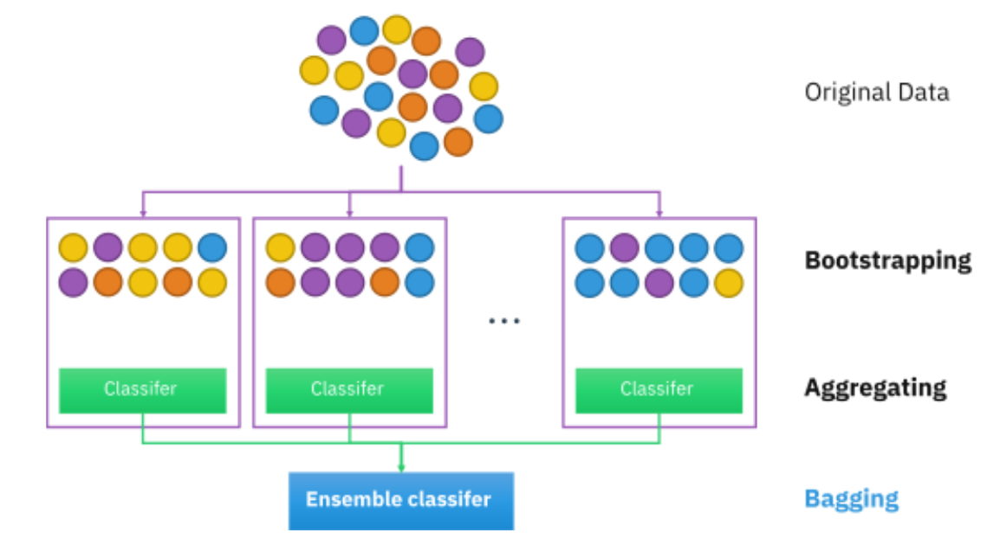
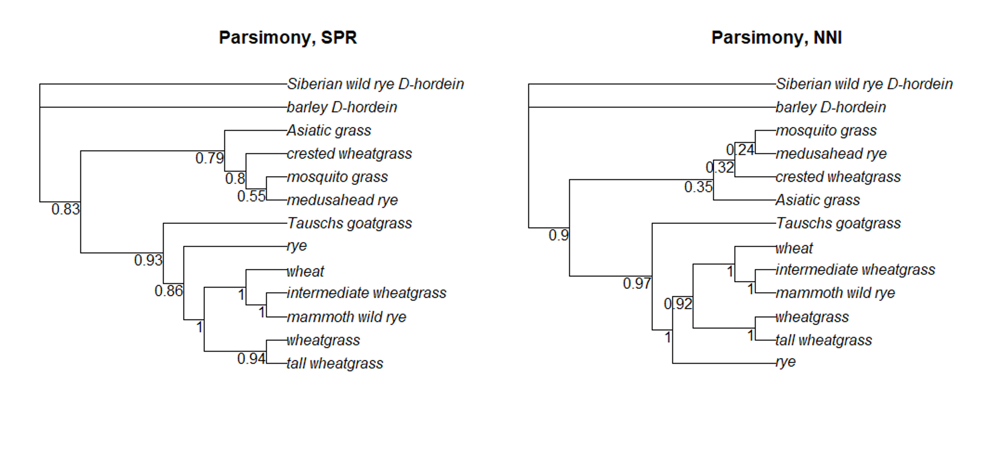
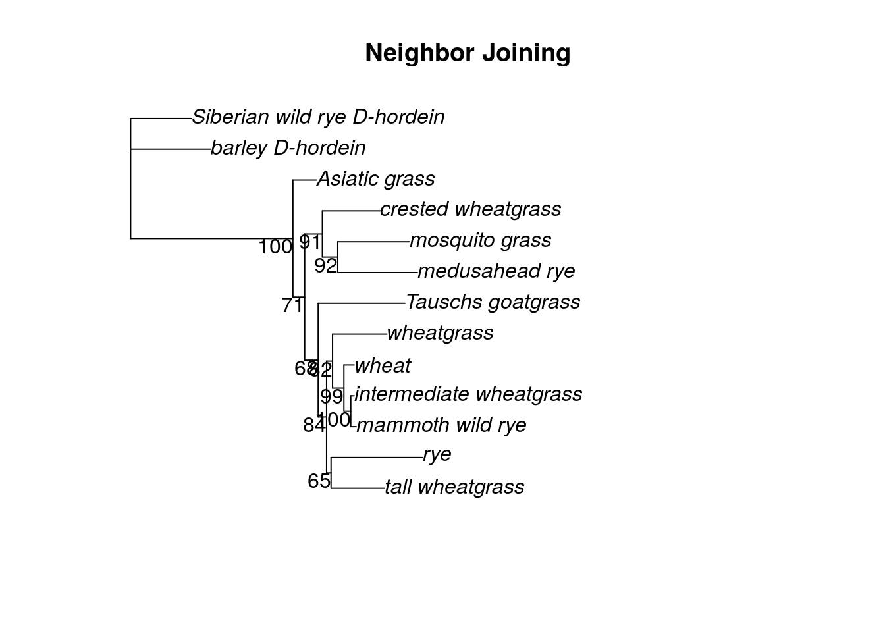

Chapter 15 Building a parsimony tree
We will continue using the phangorn package for our parsimony analyses. We are also going to briefly use the phytools package to modify the fasta file. The manual for the phytools package is here.
install.packages('phylotools')
library(phylotools)
library(phangorn)15.1 Editing the fasta file
Last week we edited the tip labels of our neighbor joining tree so that the tree displayed the common names of our grass samples instead of the GenBank accession numbers. However, we’re going to be building multiple trees from the grass fasta file, so it makes sense to edit the fasta file directly so we don’t have to manually change the tip labels every time. Phytools allows us to edit fasta files using the rename.fasta command. Before we can use it, though, we need to create a dataframe with two columns: the first column contains the old sample names (the GenBank accession numbers), while the second column contains the new sample names (the common names for each sample).
A dataframe in R is a table or a two-dimensional array-like structure in which each column contains values of one variable and each row contains one set of values from each column. We can create one by binding (or pasting) two vectors together. The vectors we are binding MUST have the information in the same order (that is, the order of GenBank accession numbers must be the same order as the common names).
old.labels <- c("JX915632", "EF105403.1", "DQ073553.1",
"FJ481575.1", "EF204545.1","AJ314771.1",
"FJ481569.1", "DQ073533.1", "AY804128.1",
"AY303125.2", "KF887414.1", "D82941.1",
"JX276655.1")
new.labels <- c('wheat', 'intermediate wheatgrass',
'mammoth wild rye', 'wheatgrass',
'tall wheatgrass', 'rye', 'Asiatic grass',
'crested wheatgrass', 'Tauschs goatgrass',
'medusahead rye', 'mosquito grass',
'barley_D-hordein', 'Siberian wild rye_D-hordein' )
sample.df <- cbind(old.labels, new.labels)
sample.df## old.labels new.labels
## [1,] "JX915632" "wheat"
## [2,] "EF105403.1" "intermediate wheatgrass"
## [3,] "DQ073553.1" "mammoth wild rye"
## [4,] "FJ481575.1" "wheatgrass"
## [5,] "EF204545.1" "tall wheatgrass"
## [6,] "AJ314771.1" "rye"
## [7,] "FJ481569.1" "Asiatic grass"
## [8,] "DQ073533.1" "crested wheatgrass"
## [9,] "AY804128.1" "Tauschs goatgrass"
## [10,] "AY303125.2" "medusahead rye"
## [11,] "KF887414.1" "mosquito grass"
## [12,] "D82941.1" "barley_D-hordein"
## [13,] "JX276655.1" "Siberian wild rye_D-hordein"In the dataframe sample.df, you can see that each row is a sample, with the accession number in column 1 and the common name in column 2.
We can now use the rename.fasta command. This command requires three arguments. The first is the fasta file that is being edited, the second is the dataframe that contains both the old and new names, and the third is the name for the newly edited fasta file. The new fasta file will be saved in your working directory (on AnVIL, this is the persistent disk).
rename.fasta('grass_aligned.fasta', sample.df, 'grass_aligned-renamed.fasta')## grass_aligned-renamed.fasta has been saved to /__w/phylogenetic-techniques/phylogenetic-techniques15.2 Inferring a parsimony tree
There are several options for inferring parsimony trees using phangorn. We can use the branch and bound tree rearrangement method with the bab command, or we can apply the nearest neighbor interchange (NNI) or subtree prunning and regrafting (SPR) approaches with either the optim.parsimony or pratchet (parsimony ratchet) commands. The branch and bound method can be very, very slow if you have more ~10 samples. Let’s take a look at the parsimony tree that results from a branch-and-bound search of the grass fasta file.
g.align <- read.phyDat("grass_aligned-renamed.fasta", format='fasta')
bab.tree <- bab(g.align)## [1] "lower bound: 1581"
## [1] "upper bound: 1803"bab.root <- root(bab.tree,
outgroup = c('barley_D-hordein','Siberian wild rye_D-hordein'))
plot(bab.tree, main = 'Parsimony, BAB')
To test both NNI and SPR approaches for parsimony trees, we will use the pratchet command. This particular command has lots of possible parameters we can change.
maxit: maximum number of iterations
minit: minimum number of iterations
k: number of rounds of no improvement after which the ratchet is stopped
rearrangements: SPR or NNI rearrangements
trace: how much information to print after each iteration
all: whether to return all equally parsimonius trees, or just one
The parsimony ratchet is an approach that was developed by KC Nixon in 1999. This approach is a more efficient way to find better trees than by just NNI or SPR rearrangements alone. phangorn implements it this way:
Create a bootstrapped dataset from the original dataset (more on bootstrapping later).
Take the current best tree (or starting tree, for the first go-round) and perform tree rearrangements using the bootstrapped dataset, saving the best bootstrap tree.
Use the best bootstrap tree and perform tree rearrangements using the original dataset. Compare the parsimony score (the smallest number of changes necessary to describe the data for a given tree) of the bootstrapped tree and the original best tree. Whichever tree is best (ie, has the lowest parsimony score) is then saved as the new “best” tree.
This process is repeated until either the algorithm reaches the max number of iterations or the k number is reached.
tree.SPR <- pratchet(g.align, maxit = 10000, minit = 100, k = 10,
all = T, rearrangements = 'SPR', trace = 0)
tree.NNI <- pratchet(g.align, maxit = 10000, minit = 100, k = 10,
all = T, rearrangements = 'NNI', trace = 0)
#We assign branch lengths to the tree equal to the number of changes
tree.SPR <- acctran(tree.SPR, g.align)
tree.NNI <- acctran(tree.NNI, g.align)
SPR.root <- root(tree.SPR,
outgroup = c('barley_D-hordein','Siberian wild rye_D-hordein'))
NNI.root <- root(tree.NNI,
outgroup = c('barley_D-hordein','Siberian wild rye_D-hordein'))
plot(SPR.root, main = 'Parsimony, SPR')plot(NNI.root, main = 'Parsimony, NNI')Take a look at the topology of the trees created using the branch-and-bound (BAB), SPR, and NNI approaches. Do you see any differences?

15.3 Parsimony scores
We can compare parsimony trees directly by comparing their parsimony scores. As mentioned above, the parsimony score is just the minimum number of changes necessary to map a dataset onto a particular tree topology. A smaller number is better.
tree.SPR <- pratchet(g.align, maxit = 10000, minit = 100, k = 10,
all = T, rearrangements = 'SPR', trace = 0)
tree.NNI <- pratchet(g.align, maxit = 10000, minit = 100, k = 10,
all = T, rearrangements = 'NNI', trace = 0)
#We assign branch lengths to the tree equal to the number of changes
tree.SPR <- acctran(tree.SPR, g.align)
tree.NNI <- acctran(tree.NNI, g.align)
SPR.root <- root(tree.SPR,
outgroup = c('barley_D-hordein','Siberian wild rye_D-hordein'))
NNI.root <- root(tree.NNI,
outgroup = c('barley_D-hordein','Siberian wild rye_D-hordein'))#for each parsimony command, we need to provide a tree and a phyDat object
parsimony(bab.root, g.align)## [1] 1803parsimony(SPR.root, g.align)## [1] 1803parsimony(NNI.root, g.align)## [1] 1803In the case of our grass dataset, all the parsimony scores are the same, so all of the methods performed equally well. We got lucky - this is not always true!
15.4 Bootstrapping
It would be nice to have a way to measure the robustness of each individual branch and clade, not just the overall tree. In phylogenetics, the measurement of choice for determining the “strength” of a branch is the bootstrap value.
Bootstrapping is a resampling method that attempts to use the original data as a way to judge the strength of phylogenetic inference. For each bootstrap replicate, the program will randomly select a number of sites to create a pseudoalignment. (For example, if the original alignment has 100 bases, the bootstrap algorithm will randomly choose 100 bases to create a new alignment. Some bases might be chosen multiple times, while other bases don’t get sampled.) After generating the pseudoalignment, a new tree is built and the relationships are stored. Here is a nice illustration of the process by www.analyticsvidhya.com

After all the bootstrapping replicates have been analyzed, each branch of the actual tree will be labeled with a value that reflects how frequently that branch was seen among the replicate trees. Higher values mean the branch has more support. In general, researchers consider a branch with a bootstrap value > 0.5 as well-supported.
Luckily, the pratchet command automatically does bootstrapping, so we already have the bootstrap information saved. We can see the bootstrap values on the trees using the plotBS command.
plotBS(SPR.root, type = "p", main = 'Parsimony, SPR')plotBS(NNI.root, type = "p", main = 'Parsimony, NNI')
You may need to resize the Plots window in order to more easily read the bootstrap values for each branch.
can we bootstrap our neighbor joining tree?
In short, yes, although we have to do a bit of R trickery, because neither ape nor phangorn have the option to bootstrap neighbor joining trees built in. We can get around this by writing our own function.
Basically, we will write a function that creates a distance matrix using the dist.ml command. (This command is a more general form of the dist.dna command. As of this writing, using dist.dna in the function throws an error.) Then we can include both a phyDat object and our function in the bootstrap.phyDat command. R will take the phyDat object and pass it to our function, then use the distance matrix in a bootstrap analysis.
fun <- function(x) nj(dist.ml(x))
bs_nj <- bootstrap.phyDat(g.align, fun)
dna_dist <- dist.ml(g.align, model = 'JC')
nj.tre <- nj(dna_dist)
nj.root <- root(nj.tre,
outgroup = c('barley_D-hordein','Siberian wild rye_D-hordein'))
plotBS(nj.root, bs_nj, 'p', main = 'Neighbor Joining')
This isn’t a perfect approach - for one thing, we can’t use the K80 substitution model for the dist.ml command. Instead, we simply used the JC model. Also, the bootstrapping values in this approach are from 1 to 100, not 0 to 1 as calculated by the pratchet command.
How does the bootstrap support for the neighbor joining tree compare to the bootstrap support for the parsimony trees?
15.5 Saving files
Make sure to save at least one of the trees you built using the pratchet command to the persistent disk.
write.tree(SPR.root, file = 'spr_grass.tre')
write.tree(NNI.root, file = 'nni_grass.tre')sessionInfo()## R version 4.0.2 (2020-06-22)
## Platform: x86_64-pc-linux-gnu (64-bit)
## Running under: Ubuntu 20.04.3 LTS
##
## Matrix products: default
## BLAS/LAPACK: /usr/lib/x86_64-linux-gnu/openblas-pthread/libopenblasp-r0.3.8.so
##
## locale:
## [1] LC_CTYPE=en_US.UTF-8 LC_NUMERIC=C
## [3] LC_TIME=en_US.UTF-8 LC_COLLATE=en_US.UTF-8
## [5] LC_MONETARY=en_US.UTF-8 LC_MESSAGES=C
## [7] LC_PAPER=en_US.UTF-8 LC_NAME=C
## [9] LC_ADDRESS=C LC_TELEPHONE=C
## [11] LC_MEASUREMENT=en_US.UTF-8 LC_IDENTIFICATION=C
##
## attached base packages:
## [1] stats graphics grDevices utils datasets methods base
##
## other attached packages:
## [1] phangorn_2.5.5 phylotools_0.2.2 ape_5.4-1
##
## loaded via a namespace (and not attached):
## [1] igraph_1.2.6 Rcpp_1.0.8 knitr_1.33 magrittr_2.0.2
## [5] hms_0.5.3 lattice_0.20-41 R6_2.4.1 quadprog_1.5-8
## [9] rlang_0.4.10 fastmatch_1.1-0 highr_0.8 stringr_1.4.0
## [13] tools_4.0.2 parallel_4.0.2 grid_4.0.2 nlme_3.1-149
## [17] xfun_0.26 jquerylib_0.1.4 htmltools_0.5.0 ellipsis_0.3.1
## [21] ottrpal_0.1.2 yaml_2.2.1 digest_0.6.25 tibble_3.0.3
## [25] lifecycle_1.0.0 crayon_1.3.4 bookdown_0.24 Matrix_1.2-18
## [29] readr_1.4.0 vctrs_0.3.4 fs_1.5.0 evaluate_0.14
## [33] rmarkdown_2.10 stringi_1.5.3 compiler_4.0.2 pillar_1.4.6
## [37] pkgconfig_2.0.3